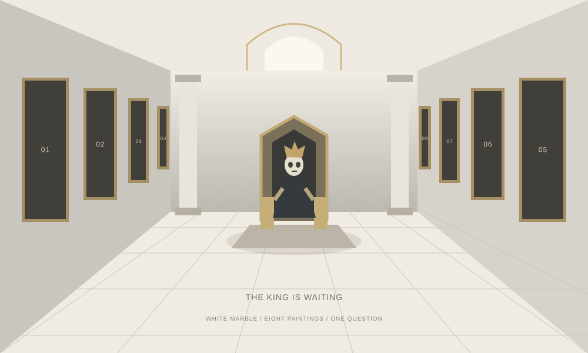
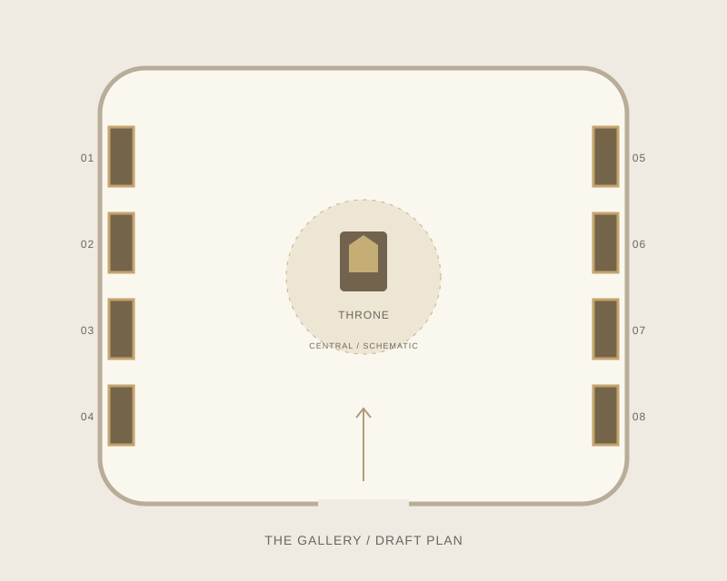
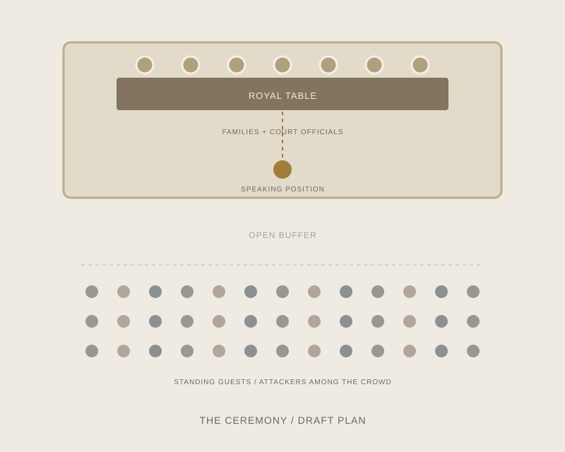
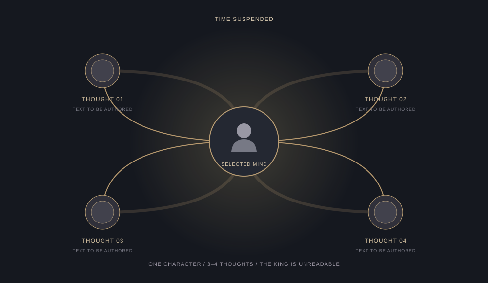

Enter any painting
Replay the same ceremony from a bounded area. Choose your own order and revisit freely.
Development workspace / 13 November 2026
Design studyA dead king waits in a marble gallery. Step inside the paintings, witness the same fatal ceremony from different positions, and decide what really happened.

Replay the same ceremony from a bounded area. Choose your own order and revisit freely.
Read one character’s thoughts, then choose what you believe happened when you return.
Answer after even one visit. Confirm your decision: a wrong answer resets the investigation.
The king asks one question
“How did I die, and who killed me?”
The player makes the deduction. No mandatory clue tour, no omniscient mind reading.
Director’s Cut: a shelved idea becomes a focused game, with one event reconsidered through eight perspectives. These diagrams visualize the design; no playable build is claimed.
Two compact spaces carry the whole investigation. The arrangements below are proposals for the first blockout, not final camera or level decisions.

White marble, an imposing central throne and a skeletal-headed king. Four paintings on each side return the player to the same event.

The royal table sits on a platform. An open buffer separates it from standing guests. Guards surround the king and walk with him; they do not carry him.
Schematic only · not to scale · diagrams are editable SVG source files and can be opened or downloaded.
The prince’s wedding gathers both families and court officials around a raised table. The scene repeats consistently on every visit.
He leaves the banquet table and walks toward the front of the platform to speak.
Several attackers rush forward. A crossbow is heard; a knife is thrown toward the king.
They form a ring around him and walk him away through the confusion.
The player returns to the gallery and selects their observations and interpretations.
As he passes the table, the king takes a grape. He puts it in his mouth on the way to the speaking position and it lodges in his throat. The attack distracts everyone; nobody recognizes his choking or helps him. He collapses and dies.
The attack is real, but it does not kill him. The correct explanation is accidental choking on the grape, with no murderer causing that death. Scene timing is dramatic and has not been finalized.
No fixed timeline timestamps, invented character names or final clue assignments have been added.
Once per painting visit, suspend the event and its timer. Lift the camera above the current area, remove the environment from view, and choose one character.

The ceremony and visit timer both pause. Resume from the same moment after closing the mind view.
Only characters inside the current viewing area are accessible. The king alone is unreadable.
Thoughts reflect a character’s knowledge and intent. Their wording and timing remain to be authored.